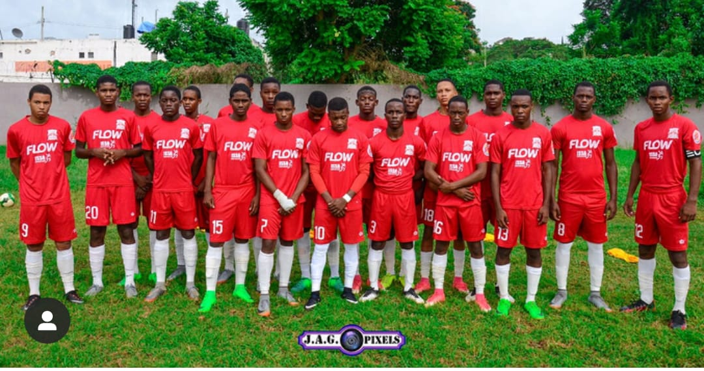

<!DOCTYPE html>
<html lang="en"></html>
<head> <meta charset="UTF-8"> 
        <meta name="viewport" content="width=device-width, initial-scale=1.0">    
         <title>INFO2180 Lab 2</title>    
          <link rel="stylesheet" href="styles.css"> 
</head>
<body>
    <div class="grid-container">
        <div class="item1">
    <div class="flex-container">
        
        <header> <a href="index.html"></a> 
            <h1>Philmark Miller: A trying yute to become a Video Game Developer</h1> 
            <p>"Sic Parvis Magna"- Greatness from small beginnings </p>
            </header> 
        </div>
            </div>
            <div class="item3">
            <main> 
<!-- This will contain your blog posts -->
<article>
    <h2>Favorite Videogames</h2>
    <h4>October 1, 2021 by Philmark Miller</h4>
    <style>
        img {
          float: right;
        }
        </style>
    <p>
        Growing up my favorite games were always developed by Nintendo.
        Such as Mario, The Legend Of Zelda, Donkey Kong, Super Ssmash Bros
        and so much more! I love many different genres but the most enjoyable
        ones are platformers, RPG, FPS, TPS, and action adventure. We had things such as multiplayer which i played with my brother alot when we were younger but 
        since he grown up his interest has really change and we dont really play as much games as we used to before.
        Gaming doesnt affect the academics in our house, rather we think it improves not only our academic skills but technical ability
         and critical thinking due to the high amount of tensions in the games we play. I must say i am
         impress by the new PSP concept.
         The system, being a proof of concept, only exists in the form of an edited video.
          In real life, the idea of such a system would immediately bring about complications; the PS5 is a physically massive system, 
          and with current technology it would be impossible to cram even a fraction of 
          its hardware power into such a small form factor, to speak nothing of the thermal issues
           it would face. The screen covering the system beyond the controls could prove problematic
            as well, since if the games were not redesigned in some capacity to fit the screen,
          many UI elements would be hidden behind the controls.
      </p>

      <p> There was a lot of consoles I experience but as stated before my favorites would be from Nintendo.
          I had a lot of fun and memories from the Super Nintendo, Ninento 64, Gameboy Advance and Nintendo DS.
          Since the PS2 most of the jamaican population converted to Playstation Users which led me spending more time on
          playstation beacause I play a lot of multiplayer games and those times cross-play wasnt introduced as yet.
          As competitors, the Call of Duty and Battlefield franchises often try to offer different things for FPS fans. This is seen with their settings, 
          as gamers will often see Battlefield and Call of Duty role reversals where one franchise takes on a time period that is completely opposite from the other. 
          They have two different focuses when it comes to their core gameplay loops, too, with one embracing small-scale warfare and the other throwing players into huge arenas with large player counts.
          While many gamers have a preference between the two franchises, 
          some things are objectively better in each. One clear example of Battlefield outdoing Call of Duty is seen with its server browser. 
          While Call of Duty used to feature a server browser, it does not do so anymore. Its last appearance was in the PC version of Call of Duty: Black Ops 3,
          with console players never getting access to the mechanic at all. However, with Battlefield showing that it is possible on consoles and in every release, 
          it is time for Call of Duty to follow suit and include a browser of its own.
      </p>
</aricle>   
<br>
<br>
<br>
<br>

<article>
    <h2> Footballing Career</h2>
    <h4>October 1, 2021 by Philmark Miller</h4>
    <p>
        I started my jamaican footballing career when i was attending Glenmuir Preparatory School.
        at first we played in a league called "JOMA League" which is a group and knockout stage tournament which consist of strictly preparatory schools across jamaica
        My first year of this league was in grade 3 where i played as a CAM and we didnt went far that season nor did I get much game time
        but yet still it was a memorable experience nonetheless. The second year in grade four i almost scored my first goal but was denied because my teammate took the ball
        from me in an offside position.
        In grade five I became a Goalkeeper and that went really well for me as I became the starting keeper and we
        went to the Semi-Finals that year.
        Grade Six was my greatest acheivement as goalkeeper because at the end of that year in the tournament I was chosen to 
        represent my parish at the U-13 level.
    
    </p>
    
    <p>
        My first year at Glenmuir High School I played as a CB at the U-13 level and soon learn it was a whole different ball game in high school even though 
        we went to the Semi-Finals that year.
        The next year at the U-14 level I realize my true talent and became a prominent CF for the team.
        Funnily, we went out at group stage shockingl which i had a tally of 2 goals, 2 assist in 5 games 
        but the parish was introduced to my talent. U-15 level we won the tournament played in the parish but only at the parish level as there was no islandwide tournament that year.
        U-16 was a wild journey as it had a lot of ups and downs and farewells as players started to transfer to different schools and migrate but it was the year that would mould for 
        the elite level of schoolboy Football.
        I played three year of Schoolboy Football at various positions and enjoyed every single moment of it. One of my best highschool memories.

    </p>
</article>
  </main>  
</div>
  <div class="item4"> 
    <aside> 
        <article>
            <div class="About">
            <h3>About</h3>
            <p>This is my first webpage web development about a blog post. I am learning new things as I go along.</p>
            </div>

          
            <h3 class="Social-Media">Social-Media</h3>
            <ul>
                <li><a href="https://www.facebook.com/philmark.miller">Facebook</a></li>
                <li><a href="https://discord.com/channels/@me/885292907232370718">Discord</a></li>
                <li><a href="https://www.instagram.com/philmark_miller">Instagram</a>/</li>
                <li><a href="https://twitter.com/MillerPhilmark?s=08">Twitter</a></li>
            
            </ul>
        
            
        <h3 class="Archives">Archives</h3>
        <ul>
            <li>Jan-Apr</li>
            <li>May-Aug</li>
            <li>Sep-Dec</li>
        </ul>

        </article> 
        
               <!-- This will be your sidebar -->   
              </aside>  
                </div>
                <div class="item5">
                 <footer>    
                          <p>Copyright &copy; 2021, Philmark Miller</p> 
                            </footer>
                        </div>
                         </body> 
                         </html> 
                         
                    
                            
                           
                           
                            
                                              